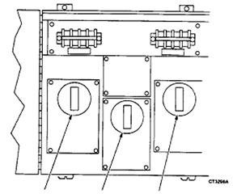

Operating Documentation
Direction 5112972-800, Rev# 2
CT Planned Maintenance Procedures
Operating Documentation |
| Required Persons | Preliminary Reqs | Procedure | Finalization |
|---|---|---|---|
| 1 | Timing Not Applicable | 30 mins | Timing Not Applicable |
Procedure Effectivity:
| Assembly: | GENERATOR |
| Subassembly: | |
| Purpose: | Check power TEK or transtector function |
| Last Revised: | October 2003 |
| Item | Qty | Effectivity | Part# | Manufacturer | |
|---|---|---|---|---|---|
| Clamp-on ammeter | 1 | - | - | - | |
Verify that the three red LED's on the transtector are lit.
| POTENTIAL FOR SHOCK. | |
| POWER IS ON! UNIT MAY BE WIRED BEFORE MAIN DISCONNECT, SO DO NOT ASSUME POWER IS OFF IF MAIN 480V BREAKER IS OFF. | |
| Make sure to keep body parts away from exposed circuits while performing this procedure. |
Using a clamp-on ammeter, measure the AC current through each loop (See Illustration 1). Compare to original reading documented from installation. If no record of previous documentation can be found, start one now.
If any readings are grossly out of range from previous readings, schedule replacement of appropriate module.
Illustration 1: Power Tek and Transtector

At this time there is no PM procedure for the power TEK R.
No finalization required.